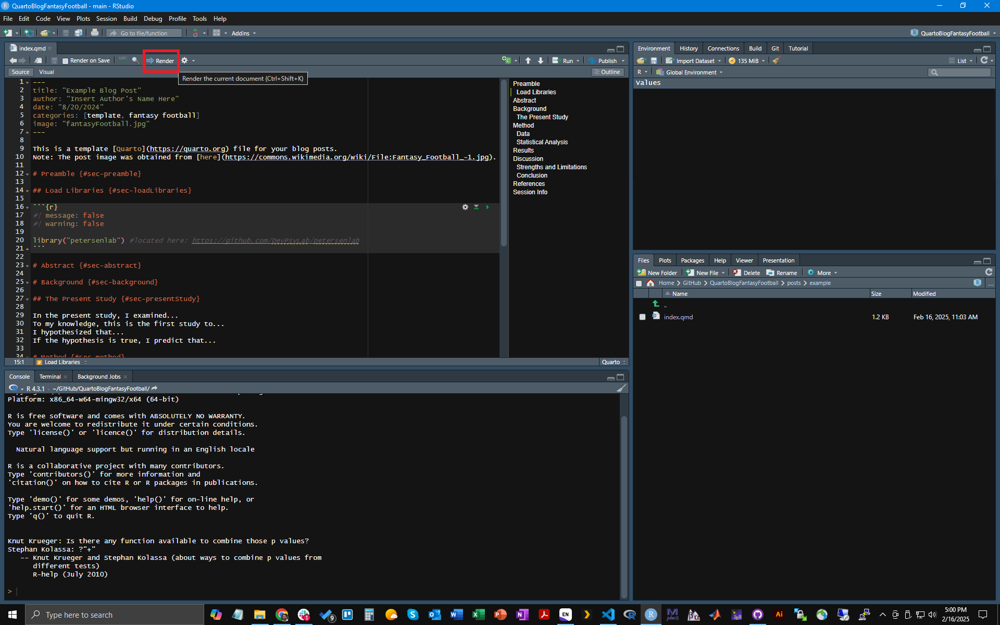

Code
library("petersenlab") #located here: https://github.com/DevPsyLab/petersenlabThis document provides instructions for using Quarto, which is how you will write blog posts.
To load libraries, use the following syntax:
```{r}
#| message: false
#| warning: false
library("petersenlab") #located here: https://github.com/DevPsyLab/petersenlab
```The resulting output (in the document) looks like this:
library("petersenlab") #located here: https://github.com/DevPsyLab/petersenlabThis document provides instructions for your blog posts. This document is a Quarto document, which is an example of a computational notebook. Quarto enables you to weave together content and executable code into a finished document. In a Quarto document, the results appear beneath the code. This allows you to share your data, statistical code, results, graphics, and text interpreting the analyses all in-line. Sharing data and your analysis code with others helps ensure reproducibility—i.e., that others get the exact same results as you. For more information on the value of computational notebooks, see the article titled “The Scientific Paper Is Obsolete”. To learn more about Quarto see https://quarto.org.
The Quarto website provides documentation on using R within a Quarto document: https://quarto.org/docs/computations/r.html. Quarto is based on Markdown syntax. For more info on the basics of Markdown, see here: https://quarto.org/docs/authoring/markdown-basics.html.
To post your blog article, follow the following steps:
GitHub repository using the QuartoBlogFantasyFootball template: https://isaactpetersen.github.io/Fantasy-Football-Analytics-Textbook/getting-started.html#sec-initialSetup.posts folder of your repository. I recommend naming the folder after either: a) the date (e.g., 2025-09-30), b) the name of the assignment (e.g., Blog Article 1), or c) a brief title for the article (Welcome to My Blog). Note: you will NOT need to create a new folder for your “Welcome to my Blog!” post; to create your “Welcome to my Blog!” post you can just edit the already existing welcome post in the following location of your repository: ./posts/welcome/index.qmd.index.qmd file from the template folder and paste it into the new folder you created for your post (do not delete the original file). Note: you will NOT need to paste this file for your “Welcome to my Blog!” post; to create your “Welcome to my Blog!” post you can just edit the already existing welcome post in the following location of your repository: ./posts/welcome/index.qmd.index.qmd you created. In the same folder, add any images you want to include in your post. Make sure you add—to the data folder—whatever data files you need for your post. In writing the article, I strongly encourage you to consult the example post (and the associated .qmd file that generated it) and the template post (and the associated .qmd file that generated it) to ensure you include the necessary information and follow the required structure.index.qmd file open, click the “Render” button in the top left of RStudio (see image below). GitHub with your changes and push them to your GitHub repository.GitHub repository to track the status as your blog and post(s) compile. This will take a while the first time to compile on GitHub, because it needs to install all of the necessary packages. If it compiles successfully, your blog should be viewable at the following link: https://YOUR_GITHUB_USERNAME.github.io/NAME_OF_YOUR_REPOSITORY/. For instance, my example blog is located at the following location: https://isaactpetersen.github.io/QuartoBlogFantasyFootball/.GitHub with your changes and push them until it appears the way you expect.QuartoQuarto will automatically put a space where a new line begins. To start a new paragraph, put a blank line in between the paragraphs.R code in a “code block”, with three backticks (```) at the beginning and end of the block, and designating the code language as R using {r}, as below:```{r}
# insert R code here (without the pound sign)
```GitHub can be no larger than 50 mb. If you want to use a data file that is larger than 50 mb, either subset the data to the relevant rows/columns you need and save it as a new data file that is less than 50 mb, or download the data from the internet as part of the R code in the Quarto script so that the data file does not need to be saved in the repo. For example, here is an example of R code to download data:```{r}
#| eval: false
nfl_pbp_raw <- nflreadr::load_pbp(seasons = TRUE)
```The resulting output (in the document) looks like this:
nfl_pbp_raw <- nflreadr::load_pbp(seasons = TRUE)1. for all numbers. Quarto will make them sequential automatically. This makes it easier to add/reorder items, so you do not have to renumber manually each time there is a change.R packages that are installed for running the blog post (.qmd) files, update the DESCRIPTION file.See the syllabus for instructions regarding submitting your blog article. As noted in the syllabus, you are encouraged to submit your blog article well before the deadline. You can expect to run into technical issues (e.g., errors when running your code, issues getting the blog post to compile, etc.). And, it can take a long time for the blog to compile the first time, because it needs to install all of the necessary packages (it can also take a while for subsequent runs for which new versions of the packages are available and the packages need to be updated). Thus, you should give yourself plenty of time to troubleshoot so that you can submit your blog article on time. If you leave it for the last day, it is unlikely that you will be able to submit your blog article on time! See the syllabus for suggestions on how to troubleshoot when issues arise.
As part of your writing assignments, you will analyze data. Thus, you will need to have data. You can use any data file(s) as part of your writing assignments—including data files that included in the course/textbook repository, data files that you find online, data files that you create, and/or data files that you simulate. You should specify where/how you obtained, created, or simulated the data. If you want to save a data file in the GitHub repository to be loaded and used in a post, you can save the data file in the same folder as the post. Or, if you want to use the same data file in multiple posts, you can save the data files in the “data” folder that is in the root of the repository.
To load a data file in the same folder as the post, use the following R code (in a code block):
```{r}
#| eval: false
load("DATA_FILENAME.RData")
```The resulting output (in the document) looks like this:
load("DATA_FILENAME.RData")To load a data file in the root “data” folder, use the following R code (in a code block):
```{r}
#| eval: false
load("../../data/DATA_FILENAME.RData")
```The resulting output (in the document) looks like this:
load("../../data/DATA_FILENAME.RData")Create a level-1 heading using the following syntax (where {#sec-level1Heading} is a unique heading label that can be used for cross-references):
# Level-1 Heading {#sec-level1Heading}Create a level-2 heading using the following syntax (where {#sec-level2Heading} is a unique heading label that can be used for cross-references):
## Level-2 Heading {#sec-level2Heading}Create a level-3 heading using the following syntax (where {#sec-level3Heading} is a unique heading label that can be used for cross-references):
### Level-3 Heading {#sec-level3Heading}Create a level-4 heading using the following syntax (where {#sec-level4Heading} is a unique heading label that can be used for cross-references):
#### Level-4 Heading {#sec-level4Heading}You can add options to executable code like this:
```{r}
#| echo: false
2 * 2
```The resulting output (in the document) looks like this:
[1] 4The echo: false option disables the printing of code (only output is displayed). Below is a code block that specifies eval: false, which allows providing code without executing the code:
```{r}
#| eval: false
2 * 2
```The resulting output (in the document) looks like this:
2 * 2Below is a code block that specifies message: false and warning: false to suppress messages and warnings:
```{r}
#| message: false
#| warning: false
library("petersenlab") #located here: https://github.com/DevPsyLab/petersenlab
```The resulting output (in the document) looks like this:
library("petersenlab") #located here: https://github.com/DevPsyLab/petersenlab```{r}
#| label: fig-insertPlotLabel
plot(cars)
```The resulting output (in the document) looks like this:
plot(cars)To include an image, use the following syntax:
{#fig-insertFigureLabel}The resulting output (in the document) looks like this:
For more info on using images in Quarto, see here: https://quarto.org/docs/authoring/figures.html.
Here is the syntax to create a table (the location of the colon in a given column specifies the text justification of that column):
| Default | Left | Right | Center |
|---------|:-----|------:|:------:|
| 12 | 12 | 12 | 12 |
| 123 | 123 | 123 | 123 |
| 1 | 1 | 1 | 1 |The resulting output (in the document) looks like this:
| Default | Left | Right | Center |
|---|---|---|---|
| 12 | 12 | 12 | 12 |
| 123 | 123 | 123 | 123 |
| 1 | 1 | 1 | 1 |
For more info on using tables in Quarto, see here: https://quarto.org/docs/authoring/tables.html.
To create unordered (bulleted) lists, use the following syntax:
- one item
- one item
- one item
- one more item
- one more item
- one more itemThe resulting output (in the document) looks like this:
To create ordered (numbered) lists, use the following syntax (make sure to use 1 for all numbers):
1. the first item
1. the second item
1. the third item
- one unordered item
- one unordered itemThe resulting output (in the document) looks like this (note how the 1s were automatically renumbered correctly):
You can create cross-references using the following syntax:
Here is a cross-reference to @sec-level1Heading.
Or, here is [another cross-reference](#sec-level1Heading) to the same section header.
Here is a cross-reference to @fig-insertPlotLabel.
Or here is [another cross-reference](#fig-insertPlotLabel) to the same plot.
Here is a cross-reference to @fig-insertFigureLabel.
Or here is [another cross-reference](#fig-insertFigureLabel) to the same image.
Here is a cross-reference to @tbl-insertTableLabel.
Or here is [another cross-reference](#tbl-insertTableLabel) ot the same table.The resulting output (in the document) looks like this:
Here is a cross-reference to Section 7. Or, here is another cross-reference to the same section header.
Here is a cross-reference to Figure 1. Or here is another cross-reference to the same plot.
Here is a cross-reference to Figure 2. Or here is another cross-reference to the same image.
Here is a cross-reference to Table 1. Or here is another cross-reference ot the same table.
For more info on cross-references, see here: https://quarto.org/docs/authoring/cross-references.html.
If you run into questions/issues/warnings/errors and need to troubleshoot, see the syllabus for suggestions on how to troubleshoot when issues arise.
Below are sections for common questions/issues/warnings/errors in R, GitHub, and GitHub Pages (that I will populate as I receive questions), and how to info on how to address them.
RGitHubGitHub PagessessionInfo()R version 4.5.1 (2025-06-13)
Platform: x86_64-pc-linux-gnu
Running under: Ubuntu 24.04.3 LTS
Matrix products: default
BLAS: /usr/lib/x86_64-linux-gnu/openblas-pthread/libblas.so.3
LAPACK: /usr/lib/x86_64-linux-gnu/openblas-pthread/libopenblasp-r0.3.26.so; LAPACK version 3.12.0
locale:
[1] LC_CTYPE=C.UTF-8 LC_NUMERIC=C LC_TIME=C.UTF-8
[4] LC_COLLATE=C.UTF-8 LC_MONETARY=C.UTF-8 LC_MESSAGES=C.UTF-8
[7] LC_PAPER=C.UTF-8 LC_NAME=C LC_ADDRESS=C
[10] LC_TELEPHONE=C LC_MEASUREMENT=C.UTF-8 LC_IDENTIFICATION=C
time zone: UTC
tzcode source: system (glibc)
attached base packages:
[1] stats graphics grDevices utils datasets methods base
other attached packages:
[1] petersenlab_1.2.0
loaded via a namespace (and not attached):
[1] gtable_0.3.6 xfun_0.53 ggplot2_4.0.0 htmlwidgets_1.6.4
[5] psych_2.5.6 lattice_0.22-7 quadprog_1.5-8 vctrs_0.6.5
[9] tools_4.5.1 Rdpack_2.6.4 generics_0.1.4 parallel_4.5.1
[13] stats4_4.5.1 tibble_3.3.0 cluster_2.1.8.1 pkgconfig_2.0.3
[17] Matrix_1.7-3 data.table_1.17.8 checkmate_2.3.3 RColorBrewer_1.1-3
[21] S7_0.2.0 lifecycle_1.0.4 compiler_4.5.1 farver_2.1.2
[25] stringr_1.5.2 mnormt_2.1.1 mitools_2.4 htmltools_0.5.8.1
[29] yaml_2.3.10 htmlTable_2.4.3 Formula_1.2-5 pillar_1.11.1
[33] nloptr_2.2.1 MASS_7.3-65 Hmisc_5.2-3 reformulas_0.4.1
[37] rpart_4.1.24 boot_1.3-31 nlme_3.1-168 lavaan_0.6-20
[41] tidyselect_1.2.1 digest_0.6.37 mvtnorm_1.3-3 stringi_1.8.7
[45] reshape2_1.4.4 purrr_1.1.0 dplyr_1.1.4 splines_4.5.1
[49] fastmap_1.2.0 grid_4.5.1 colorspace_2.1-2 cli_3.6.5
[53] magrittr_2.0.4 base64enc_0.1-3 pbivnorm_0.6.0 foreign_0.8-90
[57] scales_1.4.0 backports_1.5.0 rmarkdown_2.30 nnet_7.3-20
[61] lme4_1.1-37 gridExtra_2.3 evaluate_1.0.5 knitr_1.50
[65] rbibutils_2.3 mix_1.0-13 viridisLite_0.4.2 rlang_1.1.6
[69] Rcpp_1.1.0 xtable_1.8-4 glue_1.8.0 DBI_1.2.3
[73] rstudioapi_0.17.1 minqa_1.2.8 jsonlite_2.0.0 R6_2.6.1
[77] plyr_1.8.9 {kind=link}
{kind=link}